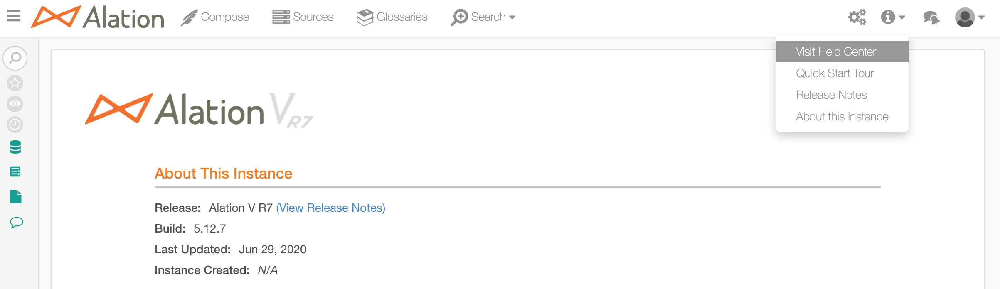
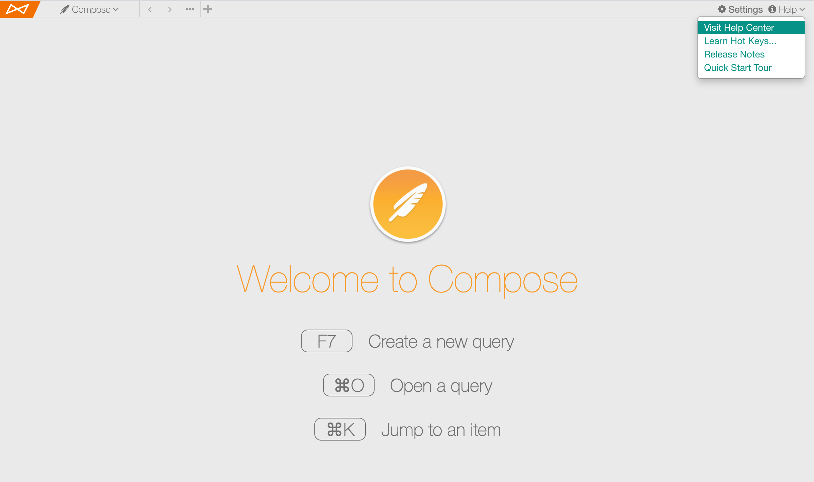

Release Notes V R5 (General Availability)¶
RELEASE 5.9.13¶
This patch delivers the Alation product changes required to complete the migration of the Alation technical support operations to the new platform: Service Cloud.
Alation Zendesk Help Center, which was previously used by the Alation technical support to manage support requests from users, is going to be turned off on July 2, 2020 11:59 pm PST. After this time, if users try to raise a ticket using the Zendesk widget or click on any of the Zendesk Help Center links in Alation, they will receive an error message until this patch is installed.
In this patch:
The Zendesk Support widget has been removed;
Built-in links to Zendesk Help Center have been removed;
The links to the Alation product documentation have been retargeted to the active product documentation site. Docs are available to all Alation users, and no additional configuration is required. See Access Alation Product Docs below.
Designated Service Cloud admin users have the ability to contact Alation Support directly from Alation if this is additionally configured on the Alation instance. Your organization will inform all Alation users who your designated admins are.
All users have the ability to access your internal help desk if this is additionally configured on the Alation instance.
If you are an Alation admin, then after this patch is applied, please make sure to perform the additional configuration to display links to the Service Cloud and your internal help desk:
Access Alation Product Docs¶
The Visit Help Center link that takes you to the Docs site is available to all users and has no dependency on their Alation user role. To open the Docs:
In the Alation Catalog, open the Information menu from the main toolbar and click the Visit Help Center link:
In Compose, click the Help menu on the top right and then click Visit Help Center.

Known Issue¶
Clicking on a result link on the Search results page on the documentation site is incorrectly redirected to the login page of the hosting platform instead of the appropriate documentation topic. The Engineering team is working to resolve this issue in the short run.
RELEASE 5.9.12¶
Improvements¶
Support Ticket # |
Description |
7933 |
This improvement allows for importing Compose query result sets into MS Excel while keeping the correct values for the text-like data types when values contain leading zeros. You can now enable pre-formatting for such data types, which consists in wrapping the values in additional quote marks in the files formed by Alation. This helps avoid additional formatting of the data sets before importing query result sets into MS Excel. For details, see Wrap Text Fields in Quotes for Exports and Downloads. |
Fixes Referenced by Support Tickets¶
Support Ticket # |
Description |
13047 |
For heavy QLI users, fixed a performance issue where Lineage resolution would lag behind other QLI jobs. This caused archiving to be ineffective, as Alation needed to process the old records. Now, Lineage resolution runs significantly faster. |
11545 |
Fixed an MDE issue with AWS Glue where table and column objects would not show up in the Alation UI after MDE was performed. Mandatory field table type for AWS Glue table has been relaxed and now defaults to Table type. The MDE framework is made fault tolerant in order to continue with table extraction in case there are intermittent failures which are logged as warnings in taskserver.log. |
RELEASE 5.9.11¶
Fixes Referenced by Support Tickets¶
Support Ticket # |
Description |
6322 |
Fixed an issue with executing queries with the result column of type Decimal on a custom data source type for a specific customer. Previously, such queries would fail with an error in Compose. Now, this specific data source will be handled like a Presto data source when processing Decimal-type result columns. |
7996 10338 13010 13344 |
Added SSRS reporting SDK jar files to support SSRS versions 2008, 2012, 2014, and 2017. |
11769 |
For heavy QLI users, fixed a performance issue with QLI where LineageResolution was slow to process rows. This would lead to a bloated database and large backup sizes due to QLI archiving not packaging those rows. |
13296 14127 |
Fixed an issue where Curation Status would suddenly drop to 0% (or change to another percentage), without users changing any filters on the Stewardship Dashboard. |
13964 |
Improved performance of bulk-delete operation for BI sources, which improves the ingestion of a large volume of permission information. Improved user filtering to correctly record the number of created and updated BI users. |
Miscellaneous Other Fixes¶
|
RELEASE 5.9.9¶
Fixes Referenced by Support Tickets¶
Support Ticket # |
Description |
12643 |
For customers with large amounts of custom field back-references to Groups, some customers encountered issues where the Customize page and Group List page would not load. This change addresses performance issues on these pages and allows them to load successfully. |
13677 |
Added support for a custom Presto driver requested by a specific customer. |
Known Issue¶
Release 5.9.9 continues to have an issue with metadata extraction from Tableau sources with permission mirroring enabled when it is taking too long to complete and when permissions may be applied inaccurately to objects in Alation. Previously, extraction from Tableau with permission mirroring enabled would stall indefinitely or fail with errors in logs. In 5.9.9, we changed the approach to permission validation and to saving permission information so that Alation can process larger volumes of data. Now, extraction from Tableau with permission mirroring enabled will be completed successfully but may still take a very long time. With the “Disable Hard Sync” setting turned on, it may complete in a shorter time.
The fix for the issue is planned for the next patch release.
RELEASE 5.9.8¶
Fixes Referenced by Support Tickets
Support Ticket # |
Description |
12960 |
Previously, encrypted assertions were not supported in Alation SAML for Okta and AppleConnect identity providers. Now this is fixed. In order to start using encrypted assertions for Okta and AppleConnect, alation.authentication.saml.assertion_decrypt_id_attr value should be set to “Id”: alation_action alation.authentication.saml.assertion_decrypt_id_attr -s Id |
Other Fixes¶
Fixed an issue of the Lineage tab containing some inaccurate data and the Filters and Joins tabs not being updated with filters and joins data when Alation ingested queries with a large number of filter statements. This was caused by the QLI parser code incorrectly handling some of the filter SQL. After the fix, Lineage, Filters, and Joins tabs will contain the correct data as expected.
RELEASE 5.9.7¶
Fixes Referenced by Support Tickets¶
Support Ticket # |
Description |
9180 9789 12901 |
Fixed an issue with the Alation Analytics ETL process where a SELECT query from a user or from a query running on schedule would stall the ETL process indefinitely if both the ETL and the query processes use the same table at the same time. Now, the ETL process will be given priority over the query processes and will terminate the query processes which lock the tables required for the ETL. If this happens, a user running queries will see a warning message in Compose Results console informing them that the query run was terminated due to the concurrent ETL. Users will have to rerun their queries a little later. Scheduled queries which run at the time of ETL will also fail in case they use tables simultaneously with the ETL process. Note that this should be a rare coincidence that is not expected to interrupt your Alation experience. |
12841 |
Fixed the ability to download encrypted logs from the Admin Settings > Logging tab for sending them to Alation Support. Since early August of 2019 this functionality could potentially be unusable on all customer versions. |
Known Issue¶
In some cases, when users navigate to Search> Advanced Search, they may see Error 500, which is caused by Alation failing to display some of the existing object types. As the workaround, if you get this error, please try opening the Advanced Search page by adding an object type filter to the URL. For example: /search/?otype=table
RELEASE 5.9.6¶
Fixes Referenced by Support Tickets¶
Support Ticket # |
Description |
10229 10958 10983 11797 12051 12155 |
Fixed an issue with the search index builder which caused the search index rebuilding process to fail with a “TypeError” during manual index rebuilding. Added safe type checking and diagnostics error logging. With this fix, the index building will continue after the Type error. |
10563 12096 |
Previously, when Alation was being updated to a new version, the permissions on a file required for enabling PostgreSQL replication were changed by the updater, which caused problems for PostgreSQL replication. This fix repairs the file permissions required for PostgreSQL replication during update. |
11171 12295 12729 |
Fixed an issue with extraction of Tableau published data sources that caused exceptions during full extraction and disabled the selective extraction. After this fix, both types of extraction from Tableau work as expected. |
12193 |
Fixed a bug where child object synchronization would still be triggered for Catalog Sets that were deleted, which caused performance deterioration. Now, the child object synchronizations are immediately disabled when the corresponding Catalog Set is deleted. |
RELEASE 5.9.5¶
Fixes Referenced by Support Tickets¶
Support Ticket # |
Description |
8956 10467 12478 |
Improvement to the Alation Analytics ETL: columns user_id, timestamp, and time_period_id in the object_field_value table will now contain values instead of NULLs. |
RELEASE 5.9.4¶
Fixes Referenced by Support Tickets¶
Support Ticket # |
Description |
10439 |
Custom DB framework has been enhanced to support extraction from databases which do not contain schemas in their data model. This improvement enables MDE, Compose and Profiling for Denodo data sources via Custom DB framework. |
11547 |
Alation now supports SSL for connection to the Tableau internal PostgreSQL database. The JDBC URI for Tableau PostgreSQL will now accept such parameters as ?ssl=true or ?ssl=false. |
Miscellaneous Other Fixes¶
|
RELEASE 5.9.2¶
Fixes Referenced by Support Tickets¶
This section only contains fixes that were first introduced in V R5.
Support Ticket # |
Description |
10343 |
Paginating through very large catalog sets did not display all the catalog set members consistently. This issue has been fixed. |
11044 |
For Hive users with a multi-realm Kerberos environment, Compose users from trusted realms outside the default Kerberos realm will no longer experience authentication issues. |
11742 |
Previously, Query Log Ingestion (QLI) did not work against Impala, Tez and when using the default Hive-based QLI. This issue is now resolved. |
Miscellaneous Other Fixes¶
|
|
|
|
|
|
|
|
|
|
|
Known Issues¶
|
RELEASE 5.9.1 - Security Patch¶
We have discovered that in certain scenarios, service account credentials may have been logged in taskserver.log files. The details have been described in our June 4, 2019 - Patch Alert/Security Bulletin: Data Source Credentials in taskserver.log Files. The patch fixes this logging problem.
Once you upgrade, please follow the instructions outlined in the bulletin to delete any existing Taskserver logs from your Alation instance.
RELEASE 5.9.0¶
New Features¶
Configuration-Based Hive Extraction¶
In this release, Alation is taking a new approach to Hive data sources: they can now be added to the catalog by uploading the Hive configuration files instead of providing the configuration parameters manually. This change enables Alation to extend the support of automatic metadata extraction and query log ingestion to numerous Hive configurations. It also reduces the configuration effort on the user’s side. This feature can be turned on in Labs. Note that enabling this functionality will not migrate existing Hive sources: this must be done on a per-data source basis. See the Hive 2 section in Adding Data Sources for details.
Generic BI Model for Tableau Server Sources¶
The Tableau Server sources in Alation move to the Generic BI Model. For Tableau sources, it means more features and a better catalog user experience. Transitioning to this model, Tableau sources receive a remake of the catalog pages, a more straightforward configuration flow, a few additional parameters in Settings, and the ability to apply permissions to logical metadata (titles, tags, descriptions, and custom fields) that was not available in previous releases. The new Generic framework for Tableau can be enabled by setting a feature flag. When enabled, it will work for all new Tableau sources that you add to the catalog. Note that the existing Tableau sources remain intact and fully functional as Alation continues to support the older Tableau integration framework; however, you can choose to migrate your Tableau sources to the new model. You can refer to Overview of Catalog Pages for Tableau Sources on Generic BI Model and the Tableau Server section of the Installing Alation: Guide to BI Tool Configuration for details.
Custom DB Enhancements¶
Custom DB now supports the following features:
Authentication¶
Alation now supports Keytab for Kerberos authentication, Active Directory authentication, and LDAP authentication for Custom DB data source. User must upload the Keytab for Kerberos authentication. Use the Properties text box on the General Settings page or Add a Data Source wizard to set the connection properties required for JDBC. The Properties Guide helps users in choosing the appropriate properties for connecting to the database.
Custom Query-Based Extraction¶
Alation supports custom query-based metadata extraction for Custom DB data source. Select the checkbox Enable custom query-based extraction and choose the metadata types on the Metadata Extraction page to perform custom query-based extraction. Users can see a preview of the result set for each query.
File-Based Query Log Ingestion¶
Alation supports file-based Query Log Ingestion (QLI) for Custom DB data source. QLI data in log4j format can be ingested from Amazon S3, Azure Blob, or Azure Data Lake Store (ADLS) Gen1 storage engines.
Refer to the Custom DB V R5 section of the Adding Data Sources for a detailed description of the connector.
Azure Databricks Connector¶
Azure Databricks is an Apache Spark-based analytics platform optimized for the Microsoft Azure cloud services platform. Alation now supports cataloging Azure Databricks. The details are available in the Databricks Azure section of the Adding Data Sources.
Enhanced DocStore Support and Virtual Data Sources for NoSQL Databases¶
Alation has significantly improved the backend support of the DocStore data sources, providing capabilities for scaling to accommodate large data sets and enhancing the server performance in this area. Moreover, Alation now supports Virtual Data Sources (VDS) for NoSQL databases. Although there is no automated metadata extraction for VDS, you can use the relevant API to upload the metadata to the catalog. Also refer to Virtual Data Source for NoSQL Databases for details on VDS for NoSQL sources.
Hive Structs Representation¶
Catalog representation of the struct data type for Hive has been improved to fully show the struct composition. In Alation, the data type for a column is usually indicated under the Properties section on the right of the catalog page; but with structs, which tend to be long and dense, the data type indicated in this way was often contracted and difficult to read. This enhancement associates the columns of struct data type with a new catalog page template NoSQL Attribute, which makes it possible to reveal the struct composition as a tree table. For more clarity, the path from the parent column to a specific struct component will appear in a hover-over tooltip. Each struct component has its own catalog page with breadcrumbs that reveal the full path from the parent schema to this object. Note that this Hive struct representation is not supported for Virtual Data Sources. See Struct Data Type in Hive Data Sources for more details.
New Glossaries¶
We have given a thorough overhaul to Glossaries in order to provide a better user experience and richer functionality. Glossaries now have a dedicated catalog page - accessible from the main toolbar - where you can find all existing glossaries and create a new one. There is now a more consistent flow of actions that makes glossaries simple to use. Articles can be added to or removed from glossaries both on the Article and Glossary catalog pages. Creating and editing of glossaries requires the roles of Catalog or Server Admins; however, all users can find and view glossaries, and add articles that they have the Edit permission for. For more details, see Working with Article Groups.
Query Collaboration¶
Compose users can now invite others to collaborate on queries. Authors can take turns modifying the query, and - as the query is evolving - the changes will be visible almost instantly to each participating party as Compose periodically checks for updated information on changes made by the collaborators. Although only one user can edit the query at any given time, another collaborator can take over and edit when the previous editor has been idle or has released the editing lock. Query version history now stores all individual edits and the information on the user who made the change. In the Catalog, all collaborators are listed in the Authors field on the query page. For m
Improvements to Query Version History¶
This release includes several improvements to Query Version History. Now, if Query Version History is enabled in your Alation instance, all edits to queries are saved automatically. In Version History, query authors can see all unpublished edits in addition to the main versions created at the time of publishing. All users (authors and non-authors) can now compare query versions and view the differences highlighted with color. For details, refer to Saving Queries and Types of Query Versions and Comparing Versions in Query Version History.
The Save As button in Compose has been renamed to Clone, although the functionality of Save As remains as before. See Cloning Queries for details.
Starting with this release, you can only schedule a published query. The Schedule button will only be enabled for queries which have been published.
Configurable Query Result Size¶
The result table size for queries executed in Compose is now configurable. There is a new parameter on the Compose Settings tab of Admin Settings that can be used to set a new result size limit. Alation recommends you assess the available resources on your instance before changing the result size to more than 70 MB: 60 GB or more of RAM of free space is recommended for stable performance. For details, see Configuring Query Result Size.
Catalog Activity Report Enhancements¶
Catalog Activity report has been enhanced to also include changes to the Title and Description fields.
chroot Updated to CentOS 7¶
Alation chroot environment OS has been updated to CentOS 7 (7.6) for Alation to be able to use CentOS 7 features and continuous updates.
Standardized Log Rotation¶
We have changed the log rotation mechanism to unify the rotation for all types of logs at /opt/alation/site/logs. Now, all logs will rotate based on the same rotation rule: at the end of the day, the current log is “retired” and marked with a date, and a new log of the same type is created for new entries. Alation has a cap on the number of rotated logs of one type. When the limit is hit, the old logs are cleaned-up.
Logging Tab¶
Sending encrypted logs to Alation has received a remake and a better, friendlier interface. Now, you can collect logs to send to Alation on the dedicated Logging tab in Admin Settings. You can retrieve a list of log files for a time period that you define and then select specific logs to be packaged. Alation will also estimate the size of the selected logs as a heads-up for the log package size. For details, see Sending Encrypted Logs to Alation. Standardized Timezone Use For Several Log Types ^^^^^^^^^^^^^^^^^^^^^^^^^^^^^^^^^^^^^^^^^^^^^^^^^^^^
Timezone use in Taskserver, Connector, and Celery logs has been standardized to utilize the UTC time format. Other types of logs will be addressed in future releases.
MongoDB Component Removed¶
In prior releases, Alation used MongoDB as an internal component for storing Alation server data, such as, for example, the results of Compose queries. Since version V R2 (5.4.x), Alation has begun to migrate off MongoDB to the PostgreSQL database. This transition has been happening in the background and is complete in the current release. In V R5, the MongoDB component has been entirely removed from the Alation package.
Alation Server Health Alerts for Admins¶
You can now configure your Alation instance to run Alation server health checks which will alert the admins in case of any server-side health issues. These checks go beyond the basic system checks such as CPU load or RAM usage which are usually monitored by the customers’ own system monitoring utilities. The Alation server health checks provide the Alation-specific details that can be essential in assessing the stability of the instance. This functionality complements the component status checks in Monitor section of Admin Settings but does not yet have a UI. For more details, see Configuring Alation Server Health Alerts for Admins.
Enhanced Search Queues¶
Search indexing has been improved to handle job crashes so that items in the search queue are not lost. All the items to be indexed are retried after the background job resumes. User-made changes have higher priority to be indexed over the items that were updated though a bulk process like metadata extraction (MDE). As a result, even if there are millions of items to be indexed because of MDE, any title/description updates will be reflected in search almost instantly.
Deprecation of Update Mention Jobs¶
To avoid potential overload of Celery queues when a large amount of catalog data is loaded via the public API, we have deprecated the background Celery tasks which were previously used to update the titles of objects mentioned in custom fields. Before this change, the titles of mentioned objects were stored as part of the reference. The more references had to be updated, the larger number of corresponding Celery jobs would be triggered, which could cause the Celery queue to overload and stall.
In V R5, we have changed the way mentioned objects are stored. Now, Alation only stores a reference of the mentioned object, and the backend API will fetch the current title whenever this object is displayed in the UI. This allows us to keep the Celery queue healthy when a large number of object mentions has to be updated. Refer to How Does Alation Update Object Mentions for more details.
Upgrade of Text Editor Froala¶
We have upgraded the Froala text editor from version 2.7.6 to version 2.9.1 to improve user experience.
Improvements¶
Catalog¶
Conversation sidebar can now be expanded to full view on any Alation object page.
Data sources can now be sorted by Star option on the Sources page for you to easily find the sources marked as favorite.
Previously, when an attachment was opened from an article page, it would open on the same browser tab and navigate the user away from Alation. Now, attachments to articles will open on a new tab.
The SQL view in the catalog was displaying a truncated view for big queries, only showing up to 100 rows. Now the SQL view supports a full view of large queries.
We added ability to search for objects by title that is a shared field propagated from a catalog set. However, updates to shared titles are not immediately reflected in search. There is a delay (10 minutes maximum) after the shared field was added/changed via a catalog set and before the object can appear in search. This time is required for search re-indexing as changes through catalog sets can impact millions of objects.
Previously, execution results of queries scheduled in Compose were displayed in the catalog as untitled results followed by the query ID: Untitled Result [ID]. This did not provide a good user experience as the results were hard to locate and differentiate and had to be renamed manually. Now, scheduled query results will have a title followed by the execution timestamp in the format: Query_Title + Timestamp (yyyy-mm-dd).
Data Sources¶
Alation can now extract IDs for measures and dimensions on the Field page for MicroStrategy sources.
Supportability¶
Previously, the batch_size parameter was hard-coded as 10,000 for the curation progress computation job. This configuration was memory-intensive and could cause PostgreSQL service to fail when the Alation server was low on memory. This parameter is now configurable via alation_conf: Set stewardship.curation_progress.ingestion.batch_size Parameter
Added the htop process viewer to Alation package to facilitate the debugging of client issues for Alation system admins. Htop is a free text-mode application for server performance profiling that can be used to view, monitor, and assess the health of Alation server load, process tree, memory usage, and CPU core usage via a fast, interactive, and admin-friendly interface. Htop is accessible from the Alation shell with the htop command. For details, please visit the htop site.
Alation now supports re-mounting of the backup volume. A script has been added to validate if the new mounted volume checks for appropriate Alation file permissions. For more information, see How to Mount Data Volumes on New Virtual Instances.
Alation saves the extracted metadata to PostgreSQL in batches. Previously, the batch size was hard-coded. In 5.9.0, the bulk_insert_sql_str_length_limit can be configured in alation_conf and the size of each batch can be fine tuned using alation.metadata_syncing.bulk_insert_sql_str_length_limit. The default batch size is 500 MB: Set bulk_insert_SQL_str_length_limit Parameter.
Public API¶
Public API now supports case insensitive and partial matching. For example, a filter like ?name=’table’ will return results with both name=’table’ and name=’Table’ and results with name=’Table1’ and name=’NewTable’, etc. Previously, it was required that the name provided in the filter should match the name of the object but in lower case: looking for a table named ‘Table’, you should have provided a filter like ?name=’table’.
Users can now make a DELETE call to the public API for RDBMS objects, /integration/v1/<schema, table, column>/ or /integration/v1/<schema, table, column>/<pk>/ to delete the object and its descendants: Accessing Relational Database type Data Objects.
Fixes Referenced by Support Tickets¶
Note that the fixes earlier added in patch releases for V R4 and V R3 also apply to this release. This section only contains fixes that were first introduced in V R5.
Support Ticket # |
Description |
5525 8847 9300 9586 |
Previously, the tooltip text for a rich text custom field was displayed on all catalog pages except for the article page. Now, users can hover over a rich text custom field and see the associated tooltip text on the article page, too. |
5944 6783 8019 8695 9380 |
During metadata extraction (MDE), Alation calculates how DB objects have changed since the last extraction. The Alation backend DB tables which record such changes previously had a size limitation. When MDE was run multiple times, the limit could be hit, and the job would crash. This limit has now been removed to fix the issue. |
5977 |
Users were not notified when the PostgreSQL information for the Tableau server was missing on the Tableau server configuration page. Now, a PostgreSQL connection error message is displayed. Moreover, PostgreSQL connection check has been added to the Test Connection functionality to address potential extraction failure which would be caused by the invalid PostgreSQL connection parameters. |
6673 |
When a user was adding Tags on an article page and scrolled to the bottom of the Tags list, the article page would scroll up. This issue has been resolved. The scroll event will no longer propagate to the parent container while scrolling through the child container. |
7071 7093 |
Previously, if a Tableau project had multiple workbooks and a workbook was deleted from Tableau server and extraction was performed, then the information about the workbook was deleted from Alation catalog; however, the deleted workbook-specific CSV, images in data, PNG, and thumbnails were still present in Alation. This issue has now been fixed. |
7267 |
Previously, buttons Relaunch Job (Metadata Extraction and Data Profiling tabs) and Import (on Query Log Ingestion tab) remained disabled after the job was completed, and a page refresh was required for them to be displayed as enabled. This improvement ensures that the fact of a job completion will re-activate these buttons without the need for a page refresh. |
7292 |
Previously, redundant API requests were made to retrieve table attributes, which caused slowness when loading table and column catalog pages. These redundant requests have been removed to improve page load times. |
7752 |
Hovering over a multi-picker field of an article did not display the tooltip text. This issue has now been resolved. |
7773 |
Previously, users were unable to uploadfiles with names containing non-ASCII/Unicodecharacters to an article as an attachment. This issue has been resolved, and such file names are now supported. |
7840 |
Previously, Elasticsearch logs were being kept endlessly, and this resulted in these log files consuming an unnecessarily large space in the logs directory. This issue has been fixed with the new Standardized Log Rotation functionality. |
8734 |
For Teradata, samples were not generated when a table to profile was partitioned and the first partition was empty. This was because Alationapplied the first partition filter.After this fix, Alation finds the firstnon-empty partition to get the samples from. |
8739 |
Previously, users who did not have permissions to edit flags were able to see the remove icon and clear the flags in the catalog page. This is now resolved and users can see or use the Remove icon only when they have permissions. With this fix, Server Admins will not be able to see the Remove icon when the permission allows only Catalog Admins. They can see the icon only when the permissions allows Server Admins. Non-admins can only remove flags when the flag permission is set to everyone. |
8828 |
Previously, DB2 published queries ending with FOR FETCH ONLY WITH UR clause did not show up under theQueries tab of the table. This issue has been resolved. |
8946 |
Fixed an issue where the propagated flags were not removed and were still displayed in UI after the main flag on the parent object was deleted by an admin user. Now, if a user adds a flag and then any admin user removes this flag, the propagated flags will be removed, too. |
9006 |
The Path Prefixes to Extract for an Amazon S3 File system would not appear on initial load or a page refresh. These filters will get re-populated when navigating to and back from the catalog page. After this fix, the path prefix appears on initial load and page refresh as is expected. |
9180 |
Previously, the periodic ETL job for Alation Analytics was only triggered after restarting the celery-beat process. This was a known issue in V R4, and Alation provided a workaround. After this fix, as soon as the feature flag for Alation Analytics is enabled in Admin Settings> Labs, the periodic ETL job for Alation Analytics will run automatically and will not require any manual steps from Alation admins. |
9180 9544 |
When a Tableau server was connected to multiple LDAP servers, permission mirroring in Alation would fail. This issue has been resolved. |
9407 |
Attributes of tables created with partition in Compose for Hive2 data sources did not automatically show up in the respective catalog pages. The table sync API for these tables displayed a success message without actually populating the catalog. These issues have been fixed. |
9455 |
Fixed a security issue with one of the files in the codebase that could potentially allow malicious code execution. The permission on this file has been set to root to exclude non-permitted users. |
9458 |
Multiple DDL statements with StandardSQL were not executing in Compose for queries against Google BigQuery. This issue has now been resolved. |
9753 |
Query Log Ingestion (QLI) failed when Kerberos authentication with a keytab was used for Hive. This issue has been resolved. |
10162 |
Previously,the tag search did not return matches for tags containing a matching string in the description. This issue has been resolved. Alation has now enabled search for tags by their description. |
10188 |
Users with more than 30 characters in their LDAP username can now log in to Alation. Previously, they would get an error and would be unable to log in. |
10264 |
Previously, anchor links did not work inside articles, and users could not navigate to sections within articles using anchor links. After this fix, users can take advantage of using anchor links in articles. |
10522 |
Previously, when attempting to print an Alation page, users would be able to see the URL of links appended to the end of where the links are. Now, when the user prints out a page, they do not see any trailing link text. |
10585 |
In this release, we have completely removed Raven, a third-party exception-logging library that we have determined can pose a security risk. There is now no ability to enable it in the Alation application. In previous releases, we had disabled Raven. |
Miscellaneous Other Fixes¶
|
|
|
|
|
|
|
|
|
|
|
|
Known Issues¶
|
|
|
|
|
|
|
|
|
|
|
|
|
|
|
|
|
|
|